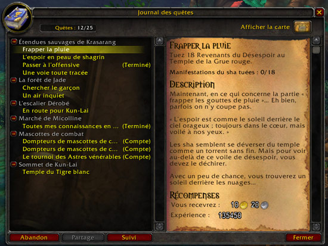
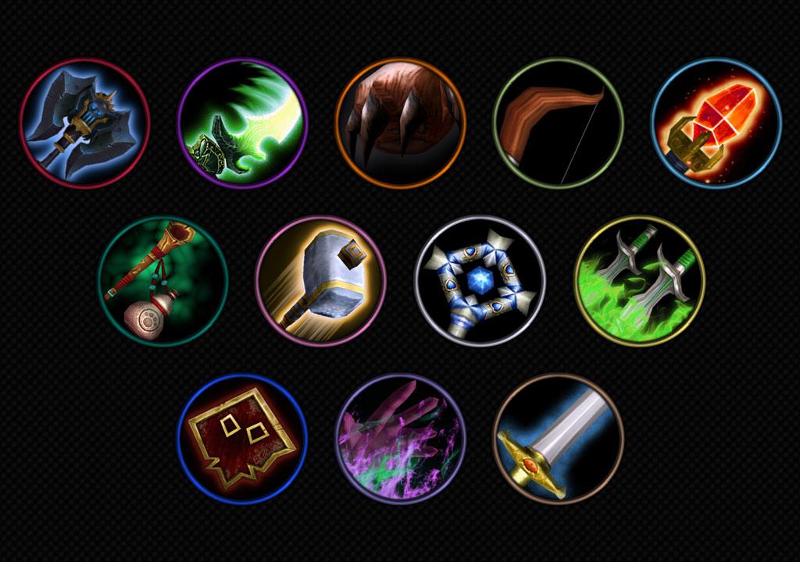
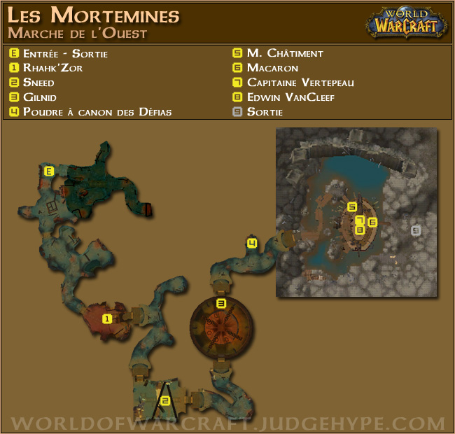
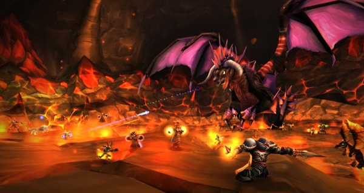

World of Warcraft (abrégé WoW) est un jeu vidéo de type MMORPG (jeu de rôle en ligne massivement multijoueur) développé par la société Blizzard Entertainment. C'est le 4e jeu de l'univers médiéval-fantastique Warcraft, introduit par Warcraft: Orcs and Humans en 1994. World of Warcraft prend place en Azeroth, près de quatre ans après les événements de la fin du jeu précédent, Warcraft III: The Frozen Throne (2003). Blizzard Entertainment annonce World of Warcraft le 2 septembre 2012. Le jeu est sorti en Amérique du Nord le 23 novembre 2004, pour les 10 ans de la franchise Warcraft.
La première extension du jeu, The Burning Crusade, est sortie le 16 janvier 20073. Depuis, sept extensions de plus ont été développées : Wrath of the Lich King, Cataclysm, Mists of Pandaria, Warlords of Draenor, Legion, Battle for Azeroth et Shadowlands. Une nouvelle extention intitulée Dragonflight est en développement.
Depuis sa sortie, World of Warcraft est le plus populaire des MMORPG. Le jeu tient le Guinness World Record pour la plus grande popularité pour un MMORPG. En avril 2008, World of Warcraft a été estimé comme rassemblant 62 % des joueurs de MMORPG 8. Le 7 octobre 2010, Blizzard annonce que plus de 12 millions de joueurs ont un compte World of Warcraft actif9. C'est à partir de fin 2012 que World of Warcraft a commencé à perdre continuellement un nombre croissant de joueurs. Au dernier trimestre 2012, Blizzard annonce le nombre de 9,6 millions d’abonnés à travers le monde, puis 7,7 millions pour le 2e trimestre 2013.
Système du jeu
Généralités
Le jeu reprend place dans le monde imaginaire d’Azeroth, et dont le cadre historique se situe quatre ans après les évènements concluant Warcraft III. Le joueur choisit son personnage parmi huit, dix ou douze races disponibles divisées en deux factions : l’Alliance et la Horde.
Quêtes
Le principe général consiste à effectuer des quêtes qui sont des variations scénarisées de « tuer X monstres », « ramener Y objets », « aller rencontrer ou parler à Z » (il existe quelques exceptions). Tuer des monstres et faire des quêtes rapporte de l’expérience (au niveau maximum, les quêtes ne rapportent plus que de l’argent et réputation). Au bout d’un certain nombre de points d’expérience gagnés, le joueur gagne un niveau et ses caractéristiques augmentent, de même que sa puissance et ses points de vie. Outre l’expérience, les quêtes récompensent également le joueur en équipement, réputation et en argent.
Des quêtes journalières (souvent liées à des évènements comme la foire de Sombrelune ou encore les différentes fêtes organisées en jeu). Il s’agit de quêtes récurrentes, identiques à chaque fois : chaque joueur peut les répéter indéfiniment, dans la double limite que chacune d’entre elles ne peut être réalisée qu’une fois par jour. Elles rapportent généralement de l’argent et permettent d’accroître la réputation des joueurs auprès des différentes factions. Il existe actuellement 313 quêtes quotidiennes différentes pour l’Alliance et environ 320 pour la Horde. Certaines quêtes quotidiennes sont liées à l’artisanat : quêtes quotidiennes de pêche, de cuisine… Dans ce cas, les récompenses sont des recettes de cuisine ou des objets disponibles uniquement par ce biais.
Les quêtes sont incorporées dans le jeu, les maîtres du jeu ne peuvent en rajouter, mais ils peuvent réguler la réinitialisation et la temporisation de l’accessibilité des quêtes. Les quêtes sont rajoutées via des patchs délivrés par la société créatrice du jeu. Il n’existait aucune quête principale dans World of Warcraft, contrairement à d’autres jeux comme Slayer Online ou Guild Wars. Depuis Légion, une quête principale, développée sur plusieurs patchs et durant toute l'extension permets de découvrir l'histoire. Les quêtes annexes, en plus de l'experience, de l'or et des objets qu'elles rapportent, permettent de découvrir des zones où la quête principale ne nous envoie pas forcément. Il existe une multitude de petites quêtes qui s’enchaînent successivement afin de faire monter le niveau de plusieurs joueurs en même temps, ces quêtes délivrent petit à petit un scénario précis sur chaque parcelle du monde d’Azeroth, de l’Outreterre et de Draenor. Une multitude de scénarios s’entrecroisent donc, il n’y a pas une seule trame principale, contrairement à des RPG mono-joueurs tels que Final Fantasy, The Elder Scroll ou Warcraft III. Il n’y a donc pas de « fin du jeu » à proprement parler.
Personnages
Les personnages de World of Warcraft sont attachés aux comptes d’utilisateur et ne peuvent être employés que sur le royaume (terme désignant les serveurs) où ils ont été créés. Néanmoins, Blizzard permet parfois la migration de personnages d’un royaume vers un autre, afin de désengorger un royaume proche de la saturation ou d’en remplir un vide. Il est aussi possible de migrer son personnage d’un royaume à un autre avec le transfert payant de personnage pour le prix de vingt-cinq euros. Les utilisateurs peuvent créer jusqu’à 50 personnages au total qui s’étendent d’une quantité diverse de races et de classes. Les deux factions actuellement dans le jeu sont l’Alliance et la Horde, constituées de différentes races, dont une qui est neutre, les « Pandaren ».
Voici les différentes classes jouable sur World of Warcraft
Types de personnages
Il est nécessaire de différencier les personnages joueurs (PJ) des personnages non-joueurs (PNJ). Les personnages joueurs sont les avatars des joueurs. La couleur du nom d’un PJ peut varier (bleu, vert, orange ou rouge) selon la faction, l’endroit, et le statut de combat de celui-ci. Les PNJ sont les personnages qui peuvent seulement interagir avec les personnages joueurs grâce aux scripts ou à l’intelligence artificielle (IA). Blizzard a repris quelques noms célèbres pour les attribuer à ses PNJ : quelques exemples, le sculpteur Calder, forgeron des fils d'Hodir, Harrison Jones, mélange d'Harrison Ford et d'Indiana Jones, avec qui le joueur enchaînera toute une série de quêtes à Uldum, son ennemi Belloc, l'archéologue français, y donne également quelques quêtes…
On distingue les PNJ amicaux (dont les noms sont affichés en vert) des PNJ hostiles (principalement les PNJ de la faction opposée et les monstres) dont le nom est en rouge. Il y a également des PNJ neutres dont le nom est jaune. Les PNJ dans les capitales et les villes peuvent vendre ou acheter des objets, former le personnage selon sa classe et ses professions, lui donner des quêtes, le faire accéder à l’hôtel des ventes du royaume (où les autres joueurs y vendent leurs objets aux enchères), et lui fournir tous les services qui sont nécessaires dans le jeu. Certains offriront simplement un conseil ou un peu d’histoire, alors que d’autres défendront la ville contre d’éventuels envahisseurs.
Jeu en équipe
Dans l'extension Légion, les raids comptent entre 10 et 40 joueurs. La difficulté est variable en fonction du nombre de joueurs pour les difficultés « Normale » et « Héroïque ». Le niveau de difficulté maximum « Mythique » est quant à lui, uniquement disponible à 20 joueurs, et sa difficulté sera semblable à celle du mode « Héroïque » que l'on a connu jusqu'à la fin de l'extension Mists of Pandaria.
Instances
World of Warcraft comporte de nombreux donjons, aussi appelés instances (car le monde du donjon est instancié sur un serveur spécifique pour les membres du groupe). Ils sont régulièrement ajoutés au jeu par le biais de mises à jour ou d’extensions. L’objectif pour le groupe de joueurs est de parcourir une carte peuplée d’ennemis contrôlés par l’ordinateur, afin d’atteindre les différents boss présents dans le donjon. En cas de réussite des récompenses, appelées loots, peuvent être récupérées sur le boss et partagées entre les joueurs. Selon les donjons, diverses stratégies peuvent être mises en place pour vaincre les adversaires proposés par le jeu. Un système de haut-faits permet d’accumuler des points si certaines conditions sont remplies pendant le combat (le rendant considérablement plus compliqué). Depuis Cataclysm, la troisième extension de World of Warcraft, un codex est disponible. Celui-ci contient les informations sur l'instance, les boss, leurs sortilèges, stratégies, et histoires liées.
Dans World of Warcraft, il existe deux grands types de donjons : ceux à cinq joueurs et les raids. La principale différence porte sur le nombre de joueurs impliqués. En effet, les raids peuvent mobiliser entre 10 et 40 joueurs en fonction de l’instance choisie. Cependant, si les raids à 40 joueurs étaient fréquents à la sortie de World of Warcraft, Blizzard a modifié la mécanique du jeu pour limiter les nouvelles sorties à 25 joueurs maximum, afin de faciliter la constitution des groupes et la bonne marche de la sortie (notamment lors de l’attribution des butins récupérés).
Raids
Si les donjons représentent un défi intéressant pour les joueurs, la véritable difficulté réside dans les raids, qui sont plus difficiles à terminer. Selon les raids proposés par le jeu, un groupe peut être composé de 10, 20, 25 voire 40 joueurs. Cependant, le nombre de joueurs impliqués n’est pas nécessairement lié à la difficulté du raid. En effet, Blizzard a opté pour une limitation du nombre de joueurs par raid, dans le but de faciliter la constitution du raid, l’attribution des butins et d’éviter une charge trop importante pour les serveurs et les ordinateurs des joueurs.
Comme pour les donjons, les joueurs du raid doivent mettre en œuvre des stratégies pour vaincre les boss proposés. La qualité du butin est bien évidemment supérieure aux items présents dans les donjons. Depuis la sortie de l’extension Wrath of the Lich King, les raids sont déclinés en mode 10 et 25 joueurs. Chacun de ces modes est disponible en deux niveaux de difficulté : normal et héroïque. Pour débloquer le niveau héroïque, il faut généralement remplir au moins une condition, comme la présence d’un joueur dans le raid ayant déjà fini le même raid en mode normal ou en ayant un objet particulier, comme une clé permettant de déverrouiller l’accès (la clé est généralement obtenue en faisant une quête, en tuant un autre boss ou en remplissant des conditions de réputation).
Scénarios
Depuis la sortie de l'extension de World of Warcraft, Mists of Pandaria, un nouveau type d'instance est présent : les scénarios. Jouables à trois, les scénarios ne représentent aucun défi de taille mais permettent de jouer et de s'impliquer dans les évènements marquants de l'histoire (comme le premier scénario, « la chute de Theramore »). Les scénarios proposent des récompenses rares, mais néanmoins intéressantes.
Arènes
C'est dans ces arènes que les joueurs peuvent s'affronter entre eux, un des aspects du mode Joueur Contre Joueur (JcJ). Les joueurs peuvent former des équipes afin de jouer en 2 contre 2, 3 contre 3 ou 5 contre 5. La performance des équipes et des joueurs est jugée grâce à plusieurs critères : La cote personnelle qui est propre au personnage et avec laquelle il est possible de débloquer certaines pièces d'équipement. La cote d'équipe qui varie en fonction des matchs gagnés ou perdus, et qui détermine tous les mercredis le nombre de points d'arène qui seront distribués. La cote d'harmonisation dite encore cachée ou mmr qui équivaut à la valeur réelle de l'équipe, afin de faire se rencontrer les joueurs du même niveau.
-
Il existe un certain nombre d'arène avec différents décors et stratégies à adopter :
- Arène de Nagrand
- Arène des Tranchantes
- Ruines de Lordaeron
- Égouts de Dalaran
- Arène Tol'viron
-
À la fin de chaque saison, des titres récompensant les meilleurs joueurs sont décernés :
- Gladiateur personnalisé : top 0,1 %
- Gladiateur : top 0,5 %
- Duelliste : 0,5 % → 2 %
- Rival : 2 % → 10 %
- Compétiteur : 10 % → 35 %